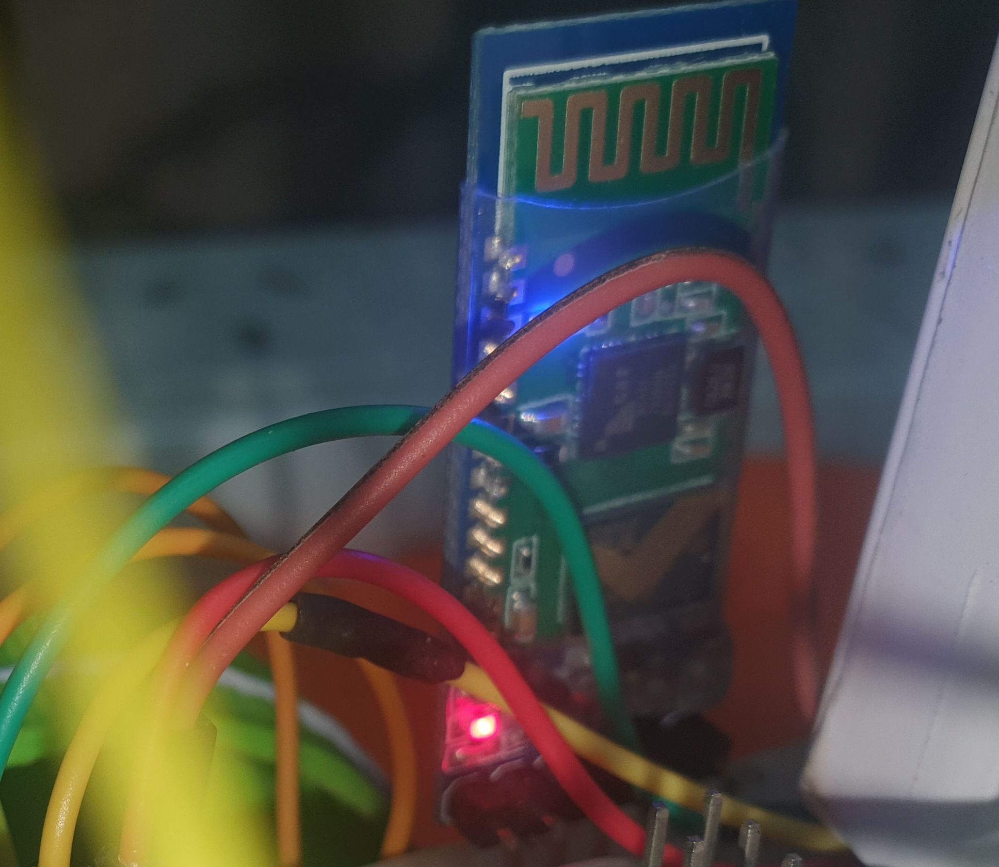
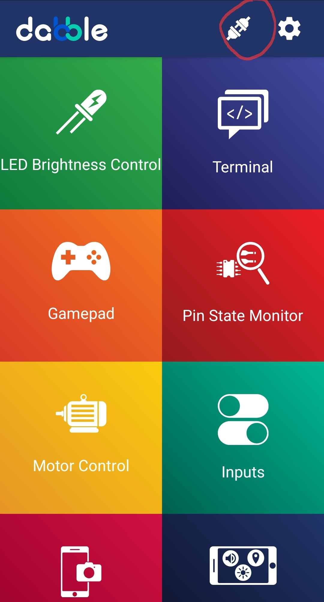
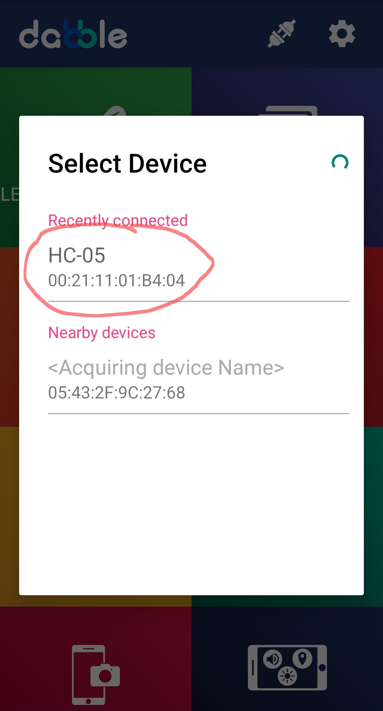
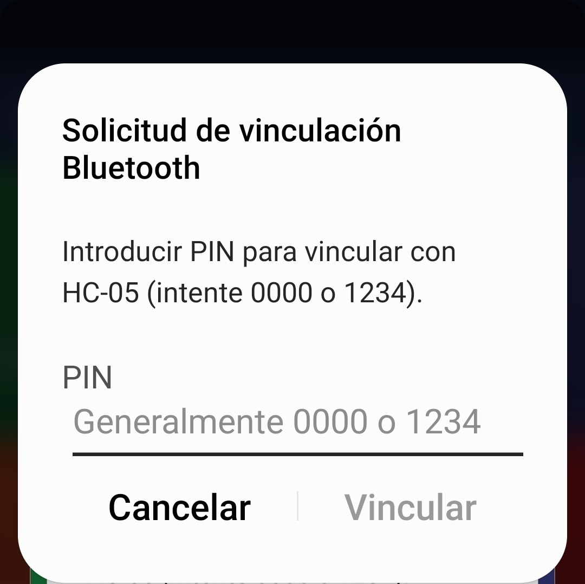
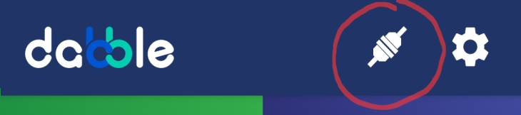
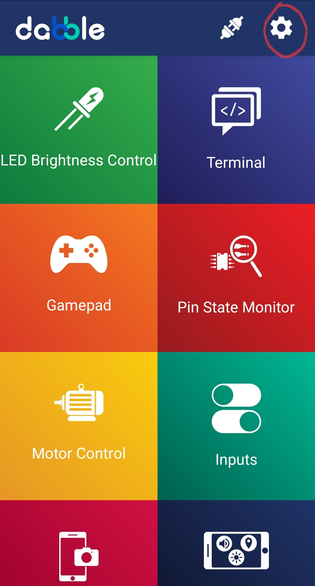
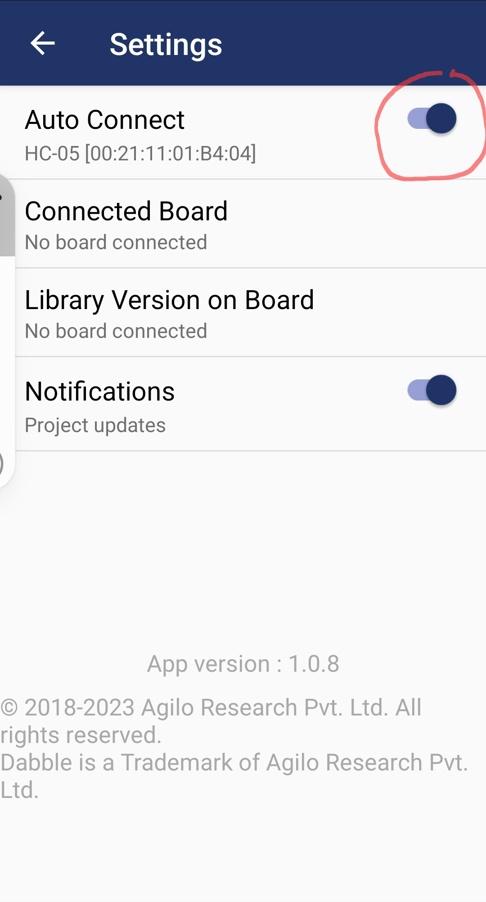
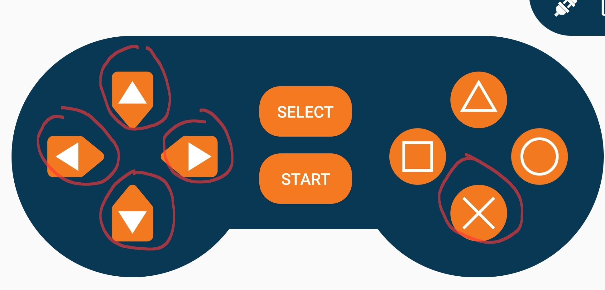

Activando la conexión inalámbrica
1°
El Módulo HC-05
Una vez que ya tenemos nuestro PonchoBot programado, estamos listos para conectarlo -a través de su módulo bluetooth HC-05- con nuestro móvil, donde tenemos que tener ya instalada la app de dabble.

Estando conectado PonchoBot a su power bank, vemos como la luz roja de su HC-05 destella en forma intermitente, mientras no está conectado/vinculado con el bluetooth del móvil.

2°
Dabble en el celular
La vinculación de nuestro celular con el bluetooth HC-05 de PonchoBot es igual a cualquier dispositivo (por ej. de audio). En la pantalla principal de dabble iniciamos el proceso de conexión:
|
Ícono de conexión  |
En nuestro móvil, en la pantalla principal de dabble, tocamos el ícono de conexión para que el bluetooth de nuestro móvil encuentre al HC-05 de PonchoBot. Se abre una nueva ventana donde se listan todos los dispositivos bluetooth encontrados: Tocamos sobre HC-05 y en la próxima ventana escribimos el pin 1234 para completar el proceso de vinculación.  Observamos, luego de un tiempo de espera, cómo el ícono de conexión de la pantalla inicial de dabble cambia a conectado.  |
Vale aclarar que muy a menudo, al tratar de comunicar dos dispositivos usando el protocolo de comunicación innalámbrico bluetooth, se producen algunos intentos fallidos (no se reconocen, demora en sincronizar o emparejar, etc.). Normalmente se soluciona (si todo está funcionando bien) desvinculando el HC-05 desde la configuración del bluetooth del celular y haciendo nuevamente el proceso de vinculación, detallado anteriormente.
3°
Conexión automática
Configuramos la Auto Conexión de dabble con el HC-05 de PonchoBot
|  |
Es conveniente ahora configurar dabble para que cada vez que se abra se conecte automáticamente. Esto siempre demora un poco, simplemente tener paciencia (hold your horses). Se recomienda no desconectar el HC-05 de dabble, simplemente cerrar el programa cuando se termine de usar. Esto evita tener que desconectar y conectar cada vez que se inicia o se cierra dabble y también previene los problemas de conexión propios del protocolo de comunicación bluetooth. |
4°
Control Gamepad
Tocamos sobre Gamepad para comenzar a manejar PonchoBot con el joystick digital, utilizando flecha arriba para avanzar, abajo para retroceder, izquierda/dercha para girar y X para detener.

En PonchoBot el módulo HC-05 conecta su transmisión de datos (pin TX) a D3 de Arduino Nano y la recepción de datos (pin RX) a D2.